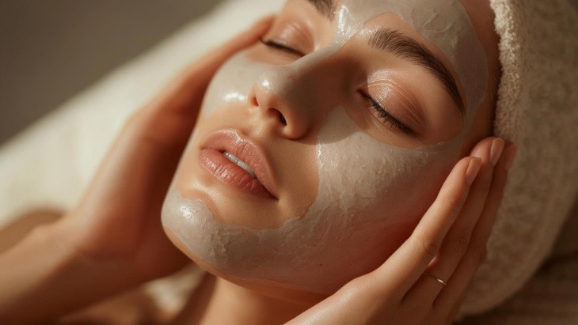

Cilt Bakımında Sıklıkla Yapılan Hatalar

Günümüzde kozmetik dünyasındaki bilgi kirliliği ve kulaktan dolma tavsiyeler, doğru bildiğimiz yanlışları uygulamamıza neden olmaktadır. Kusursuz bir cilt görünümü elde etmeye çalışırken, farkında olmadan cildimizin doğal yapısına ve bariyerine zarar verebiliyor, çeşitli cilt problemlerine kendi ellerimizle davetiye çıkarabiliyoruz.İşte daha sağlıklı bir cilt için acilen farkına varmamız ve uzak durmamız gereken, cilt bakımında en sık yapılan temel hatalar:
Güneş Kremini Sadece Yazın veya Dışarıdayken Sürmek: En yaygın yapılan hatadır. UV ışınları bulutlu günlerde ve hatta camdan geçerek evde/ofiste bile cilde zarar verir. Erken yaşlanmayı ve lekelenmeyi önlemek için güneş kremi yaz-kış her gün rutinin son adımı olmalıdır.
Makyajla Uyumak: Gece, cildin kendini onarma ve yenileme vaktidir. Makyajla uyumak gözenekleri tıkar, sivilce oluşumuna zemin hazırlar ve cildin nefes almasını engelleyerek matlaşmasına neden olur.
Peeling ve Asitleri (AHA/BHA) Abartmak: Ölü derilerden arınmak cilt için harikadır ama cildi sürekli granüllü temizleyicilerle (kese/scrub) veya sert asitlerle soymak cilt bariyerini zedeler. Bozulan bir bariyer kızarıklığa, nemsizliğe ve sivilce patlamalarına yol açar.
Sivilceleri Sıkmak: Bir sivilceyi sıkmak, bakterileri cildin daha derinlerine itebilir, enfeksiyonu yayabilir ve en kötüsü kalıcı yara izlerine (skar) veya lekelere neden olabilir. Bunun yerine sivilce kurutucu lokal ürünler veya bantlar kullanmak çok daha güvenlidir.
Yağlı Ciltlerin Nemlendiriciye İhtiyacı Olmadığını Düşünmek: Cilt nemsiz kaldığında (susuzlaştığında), bunu telafi etmek için daha fazla yağ (sebum) üretir. Bu da daha çok parlama ve sivilce demektir. Cilt tipin ne olursa olsun, su bazlı ve gözenek tıkamayan (non-komedojenik) bir nemlendirici şarttır.
Çok Fazla Ürünü Aynı Anda Kullanmak: Sosyal medyada görülen her yeni serumu veya kremi rutine eklemek cildi yorar. Özellikle C vitamini, Retinol ve asitler gibi aktif içerikleri birbirini tanımadan bilinçsizce karıştırmak ciddi cilt tahrişlerine sebep olur. "Az ama öz" her zaman daha iyidir.
Sabırsız Olmak: Yeni bir ürünün (özellikle leke veya yaşlanma karşıtı ürünlerin) ciltte tam etkisini göstermesi hücre yenilenme döngüsüne bağlı olarak genellikle 4 ila 6 hafta sürer. Ürünleri birkaç gün kullanıp "işe yaramıyor" diyerek sürekli değiştirmek cildin dengesini alt üst eder.